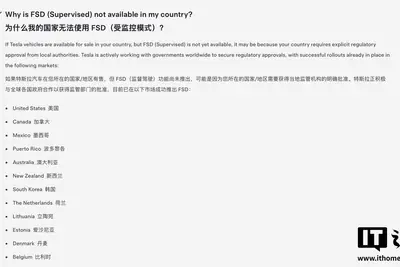

其他IT早报 0823：特斯拉官网监督版 FSD 支持地区移除中国；DeepSeek 周末统一按低谷价计费；中国铁路成都局回应占座放零食；雷军携小米阔折叠新机现身...
- Harvard’s $699 startup bootcamp offers AI avatars of its instructors
- Inherent, founded by DeepMind alumni, says its AI ‘teammate’ just outperformed Anthropic and OpenAI at replicating research
- Why your local LLM feels dumber than it is